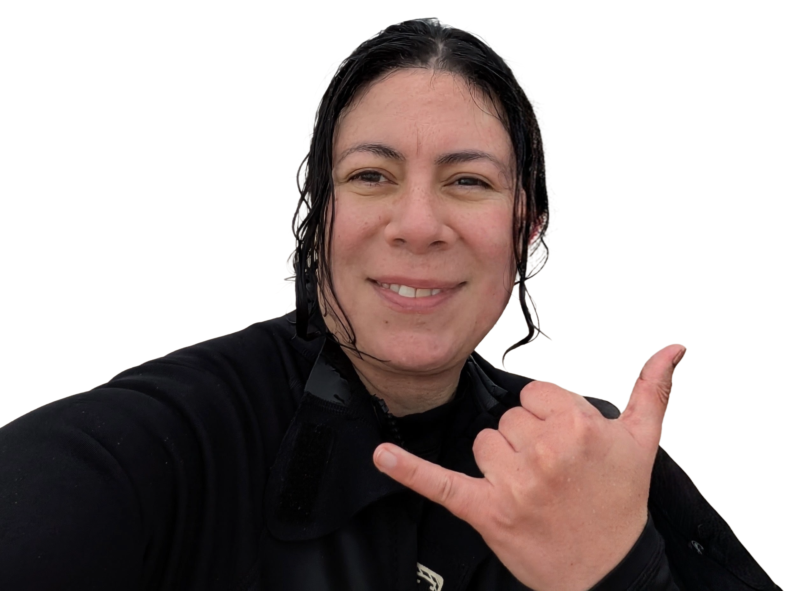

ABOUT
Digital literacy, STEM, education, design and community.

Hello, I'm Masina "Tippi" Nina Coulter.
I'm interested in the intersection of technology, education, science, design and community.
My background combines digital literacy education, water science, horticulture, web development, psychology, design, and hands-on technology projects.
I enjoy finding practical and creative ways to make technology and STEM accessible, interesting and useful for people of different ages and backgrounds. The world is full of wonderment.
What I've Done (Doing)
Digital Literacy
Helping people build confidence with computers, Microsoft Office, online tools and everyday digital technology. I research, create and differentiate lessons to bridge the digital divide at Brunswick Neighbourhood House.
Started: February 2026 - Current
Achievements: Classes quickly became fully booked and there is now a waiting list.
Water Operation
I was a Trainee Water Operator at Greater Western Water for 8 months. I learnt how to do rigorous labatory testing daily and submit and analyse data.
Environment
A background in horticulture and environmental work, with an interest in connecting people with science and the natural world.
Community Education
Designing accessible learning experiences for adults, community groups and people developing new skills.
Why I Build Things
I'm interested in project based learning. Whether it's building something with an Arduino, examining seeds under a microscope, creating a digital skills activity or developing a new workshop idea, I like projects that turn abstract ideas into something people can actually interact with. That way they have something tangible to show and tell others.